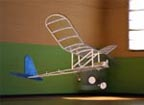

Other Modelers Work
|
From time to time other modelers have sent me photos of their aircraft built from my plans. This page features some of those models. Click the builder names below to view photos and notes of their individual projects.
You can reach out to me using the Contact Us link on the Flying Models plan site if you have a project you would like featured.
| |||
 |  |  |  |
|---|---|---|---|
| Albatros B1 | 1916 Bellanca Tractor | Flying Aces Stick | J3 Kitten |
| Ken Lawrence | Karl Bambas | John Stennard | Who's will be first? |
| Lee Denny | |||
| Jerry Gordon | |||
| Patrick Dottax | |||
| Bruce Shepard | |||
| Glen Sayers | |||
|
I extend a sincere thank you to all the builders your images and your stories.
Laser cut kits for the J-3 Kitten are available from Peck Polymers. The Albatros is available as a short kit through Flying Models.
Plans for the Albatros, Daddy-O and Bellanca Light Tractor are also available through the Flying Models plan site.
Contact me directly using the link above if you have any questions
|
Return to Home Page
Copyright 2003-2023, Thayer Syme. All rights reserved